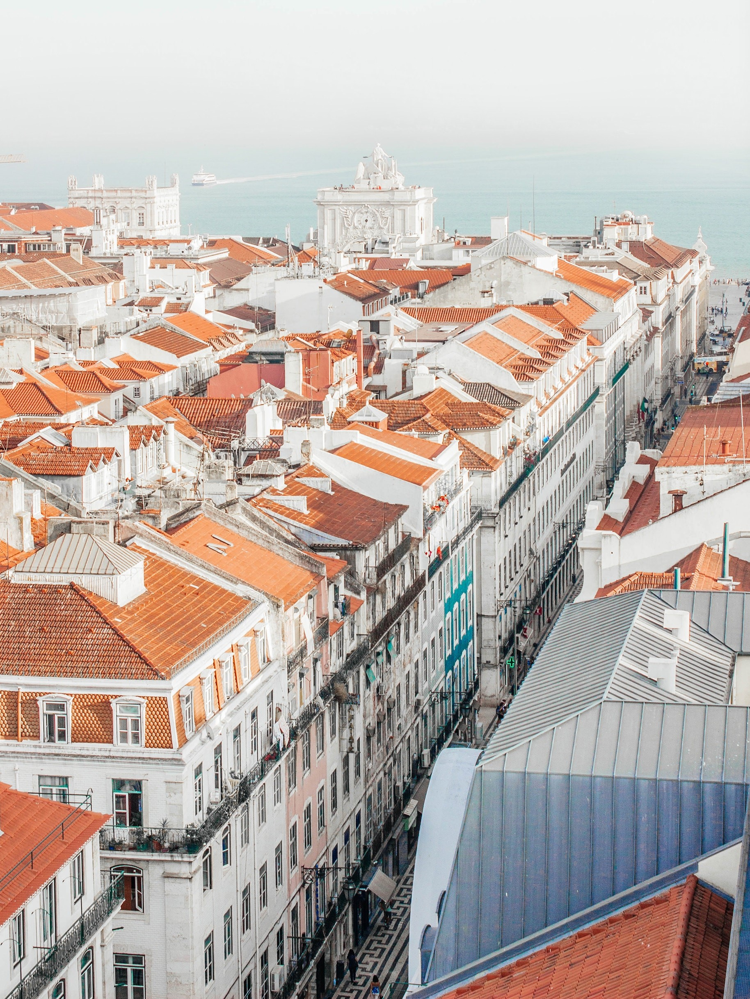
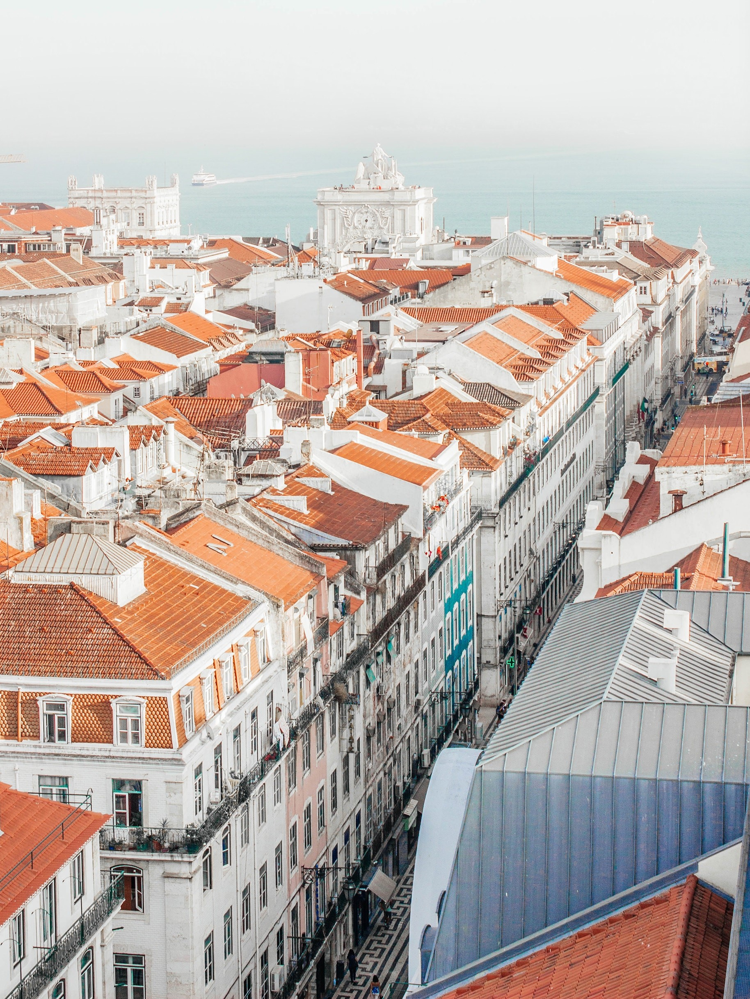

LISBOA
"We leave something of ourselves behind when we leave a place. We stay there, even though we go away."-Pascal Mercier, Night Train to Lisbon
 

Viva! Saúde!
The capital of Portugal, Lisbon (Portuguese: Lisboa) has experienced a renaissance in recent years, with a contemporary culture that is alive and thriving and making its mark in today's Europe. Perched on the edge of the Atlantic Ocean, Lisbon is one of the rare Western European cities that faces the ocean and uses water as an element that defines the city. Lisbon enchants travelers with its white-bleached limestone buildings, intimate alleyways, and an easy-going charm that makes it a popular year-round destination.
http://wikitravel.orgExplore Lisbon